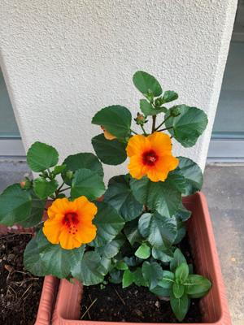

うるがいの話 ある日
最新: ドーパミン
うるがいとは 前提知識です
カニの画像をクリックすると『うるがいの話』サイトを表示します
うるがい(ｳﾙｶﾞｲ urugai)とは、『もずくがに』の名前でとても大きくなります。
たながー（ﾀﾅｶﾞｰtanagaa）とは手長えびのことで、何種類かあり大きいのは車 エビぐらいになります。
ぶながー(bunagaa)とは、赤い髪の毛、赤い身体、そして身長は１ｍ２０ｃｍ ぐらい、川の蟹を食べているの目撃された。場所は沖縄県国頭郡大宜味村のと ある村僕の隣近所に住んでいる爺さんから、聞いた話です。
2021年09月14日 (火）
ドーパミン
15:46

いろいろな個人が作っているサイトを、見て助かっている。ギブアンドテイク
ではなく、いまのところテイクだけである。自分でプログを作ると分かるが、
かなり手間暇がかかる。だいたい、このプログでも３０分以上はかかっている
もともとにプログ作成は、私がエンジニアなのでサイトを作る技術がないとど
うかなと２００３年に挑戦したのがきっかけで始め、よくあるパターンで直ぐ
に中断、１３年後の２０１６年からぼつぼつと再開している。なぜ彼らがサイ
トを作っているのだろうと常々思っていた。ヒューマニエンス「“快楽”ドー
パミンという天使と悪魔」というＢＳプレミアムでの番組をみる。そうなのか
前頭葉とかかわりあいのあるドーパミンが、人のために何かをしているという
ことで幸福感、快楽を感じると説明していた、なるほど！。遅まきながら私も
誰かが役に立つ、情報提供するサイトを作ろうと改めて決意した。ということ
で
『ぶながぁの話』
と
『Got cat カミマヤーの話』
に役立つ情報を載せるこ
とにする、ただね、これが大変なのですよ（皆、凄いと思うよ、同志たち）。
ネタはとりあえず書いたが、まともに読める内容になるのはいつだろう。なお
この二つのサイト、６月２４日にサイトを作ったがヤフーの検索一覧にまだ載
らない。だから、普通の人には直接この二つのサイトは見れない。なかなかゴ
ールは遠いのですよ。おまけ、このネタのためサイトを検索していると面白い
サイト
『心の中の悪魔を手懐ける方法【ドーパミンに振り回されない】』 が
あった。番組より先にすでに先行していた、作成者のプロファイルが面白い年
収８百万（右側の広告の欄にWho is 44?）を出すとは・・・・。
なおこのサイトは広告があるので純粋な同志ではないかな。純粋な同志とは広
告がまったく載らないサイトの事。ちなみに『ぶながぁの話』は無料でサイト
を利用しているのでスマホで見ると勝手に広告が載っている。